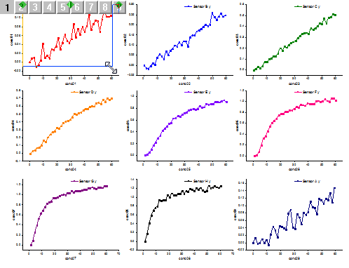

Der Dialog Layerverwaltung verwaltet die Layer im aktiven Diagramm durch Hinzufügen, Bearbeiten, Anordnen und Verknüpfen von Layern.
|
Die Schaltfläche Anwenden wendet Einstellungen auf die Vorschau an, nicht auf das reale Diagramm. Operationen, die auf das Vorschaudiagramm angewendet wurden, können durch die Schaltfläche Rückgängig im Dialog rückgängig gemacht werden. All diese Operationen werden erst dann auf das aktive Diagramm angewendet, wenn der Anwender auf die Schaltfläche OK klickt. |
|
Hinweis: Seit Origin 2018b haben wir die allgemeine Anzeigefunktion für Grafiken mit mehreren Layern eingeführt, die dazu verwendet werden kann, benutzerdefinierte Anpassungen, die an einem Layer vorgenommen wurden, auf andere Layer auf der gleichen Grafikseite mit mehreren Layern anzuwenden.
Davon ausgehend, müssen Sie vielleicht die Einstellungen der allgemeinen Anzeige prüfen, wenn Sie mehrere Layer ausgewählt haben und das Hilfsmittel Layerverwaltung verwenden, um sie zusammen benutzerdefiniert anzupassen. |
Mit dem Dialog Layerverwaltung können Einstellungen auf mehrere Layer gleichzeitig angewendet werden. Im Folgenden finden Sie ein kleines Beispiel:

Um Operationen wie Vertauschen, Ausrichten und Verknüpfen zwischen den Layern durchzuführen, sollten Anwender die Indexnummer der Layer festlegen.
| Operation | Dialogoptionen |
|---|---|
| Vertauschen | Registerkarte Größe/Position: Vertauschen |
| Ausrichten | Registerkarte Größe/Position: Ausrichten |
| Verknüpfen | Die Registerkarte Verknüpfung |
Befolgen Sie die untenstehenden Schritte, um zu lernen, wie Layer vertauscht werden.
|
Wenn die Layer verknüpft werden, werden sie als eine Einheit behandelt. Wenn die Layer neu angeordnet werden müssen, sollten Sie zuerst ihre Verknüpfung aufheben. Sie können sie nach der Neuanordnung neu verknüpfen. |
|
Wenn Sie den Hauptlayer auswählen, mit dem Sie verknüpfen wollen, können nur Layer mit kleineren Indexnummern als Hauptlayer ausgewählt werden. Wenn Sie den/die neuesten Layer als Hauptlayer wählen möchten, ordnen Sie sie im Feld Layerauswahl bitte zuerst neu. |
Das Hilfsmittel Layerverwaltung wird zum Verwalten der Layer im aktiven Diagramm durch Hinzufügen, Löschen, Bearbeiten, Ändern der Größe und Neupositionieren von Layern verwendet.
Sie können im Dialog Layerverwaltung Layer verschiedenen Typs mit der Registerkarte Hinzufügen hinzufügen.
|
Um Daten zu einem neuen Layer hinzuzufügen, können Sie die Zeichnung per Drag&Drop in den Layer ziehen oder den Dialog Diagrammeinstellungen verwenden. |
Um einen speziellen Layer zu löschen, klicken Sie mit der rechten Maustaste auf den Layer und wählen Sie Layer löschen. Klicken Sie auf Anwenden, um die Vorschau anzuzeigen. Klicken Sie dann auf OK, um die Einstellung umzusetzen.
Mit dem Dialog Layerverwaltung können Sie die Layerindexnummer im Feld Layerauswahl neu ordnen. Zur besseren Erklärung beginnen wir mit einem Diagramm mit doppelter Y-Achse. Im folgenden linken Diagramm befindet sich ein grünes Linien-Punktdiagramm mit rechter Y-Achse in Layer 1 und ein oranges Säulendiagramm mit linker Y-Achse in Layer 2. Um das Linien-Punktdiagramm auf dem Säulendiagramm zu positionieren, können Sie diese zwei Layer neu ordnen.
Öffnen Sie den Dialog Layerverwaltung und ziehen Sie Layer2 auf LayerObereXRechteY im Feld Layerauswahl. Layer2 ist dann vor LayerObereXRechteY und wird gleichzeitig in Layer1 umbenannt. Klicken Sie auf Anwenden und dann auf OK, um die Einstellung umzusetzen.
Hinweis: Origin löst möglicherweise Layerverknüpfungen während des Neuordnungsprozesses. Um mehr über das Hilfsmittel Layerverwaltung zu erfahren, lesen Sie bitte die Informationen zu der X-Funktion Laymanage nach.
Während die Layer verknüpft sind, bewirkt eine Größenänderung des Hauptlayers auch die gleichzeitige Größenänderung aller Unterlayer.
Sie müssen diese Unterlayer zuerst mit einem Hauptlayer auf der Registerkarte Verknüpfung verknüpfen. Nach der Verknüpfung gehen Sie zur Registerkarte Größe/Position und wählen den Hauptlayer im Feld Layerauswahl. Wählen Sie dann Größe anpassen und passen Sie die Größe benutzerdefiniert an. Klicken Sie auf Anwenden, dann auf OK, und alle Unterlayer werden bezüglich ihrer Größe entsprechend der Größe des Hauptlayers angepasst.
Sie können die Größe des Hauptlayers auch direkt im Diagramm mit mehreren Layern ändern.

Um die Größe von Unterlayer anzupassen, sollten Sie zuerst einen Layer von der verknüpften Gruppe trennen. Dazu kehren Sie zum Dialog Layerverwaltung zurück und wählen den spezifischen Unterlayer im Feld Layerauswahl. Deaktivieren Sie dann das Kontrollkästchen Das Ziehen zur Neupositionierung positioniert auch den Hauptlayer neu auf der Registerkarte Verknüpfung. Klicken Sie auf Anwenden und dann auf OK.
Sie können dann die Größe des separaten Unterlayers anpassen. Die Methode entspricht der Methode zum Anpassen der Größe des Hauptlayers. Sie können die Größe des separaten Layers auf der Registerkarte Größe/Position anpassen, indem Sie einen bestimmten Unterlayer im Feld Layerauswahl auswählen oder das Rechteck mit den acht Quadraten verwenden, um die Größe direkt im Diagramm zu ändern. 
Hinweis: Wenn das Kontrollkästchen Das Ziehen zur Neupositionierung positioniert auch den Hauptlayer neu auf der Registerkarte Verknüpfung für einen Unterlayer aktiviert ist, bewirkt die Größenanpassung dieses Unterlayers die Größenanpassung der gesamten verknüpften Layergruppe.
Es gibt Situationen, in denen Sie Layerpositionen und -layout in einem Diagramm mit mehreren Layern neu anpassen möchten. Sie können zur Registerkarte Anordnen gehen und die Einstellungen für Abstand und Layout festlegen. Im Folgenden wurde das Diagramm mit mehreren Layern 3 x 3-Layout mit einem Abstand von 0 festgelegt. Klicken Sie auf Anwenden, um die Änderungen im Vorschaufenster zu visualisieren, und dann auf OK, um sie umzusetzen.
|
Sie sollten all diese Verknüpfungen zwischen Hauptlayern und Unterlayern lösen, bevor Sie das Layout benutzerdefiniert anpassen, einschließlich der Abstände oder die Anzahl der Spalten/Zeilen. |